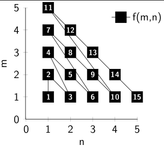

Die natürlichen Zahlen sind abzählbar.
Beh.: \(\mathbb{N}\) ist abzählbar.
Bew.: direkt Sei \(f: \mathbb{N} \rightarrow \mathbb{N}\) definiert durch \(f(n) := n\). \(f\) ist also die Identität und damit bijektiv und insbesondere surjektiv \(\blacksquare\)
Die ganzen Zahlen sind abzählbar.
Beh.: \(\mathbb{Z}\) ist abzählbar.
Bew.: direkt Sei \(f: \mathbb{N} \rightarrow \mathbb{Z}\) definiert durch
Also: \(\forall z \in \mathbb{Z}: \exists x \in \mathbb{N} : f(x) = z\)
da:
Es gibt also für jede ganze Zahl z eine natürliche Zahl n, die ich in \(f\) stecken kann, um z zu erhalten \(\blacksquare\)
Beh.: \(\mathbb{N} \times \mathbb{N}\) ist abzählbar.
Bew.: direkt Sei \(f: \mathbb{N} \times \mathbb{N} \rightarrow \mathbb{N}\) rekursiv definiert durch \(f(1,1) := 1\) und
Diese Abbildung sieht wie folgt aus:
{kind=link}

Ich finde, es ist intuitiv klar, dass diese Funktion bijektiv ist. Hat jemand dafür einen sauberen Beweis?
Also gibt es eine Umkehrfunktion (die auch bijektiv ist). Also ist \(\mathbb{N} \times \mathbb{N}\) abzählbar \(\blacksquare\)
Beh.: \(\mathbb{Q}^+\) ist abzählbar.
Bew.: über \(N \times N\) Jede Zahl \(x \in \mathbb{Q}^+\) kann mit zwei natürlichen Zahlen dargestellt werden: \(x = \frac{p}{q}\). Also gibt es eine Funktion \(f: \mathbb{N} \times \mathbb{N} \rightarrow \mathbb{Q}^+\) mit \(f(m, n) := \frac{m}{n}\). Diese Abbildung ist offensichtlich surjektiv. \(\blacksquare\)
Material
Die LaTeX-Dateien für die Bilder sind in diesem Repository zu finden.